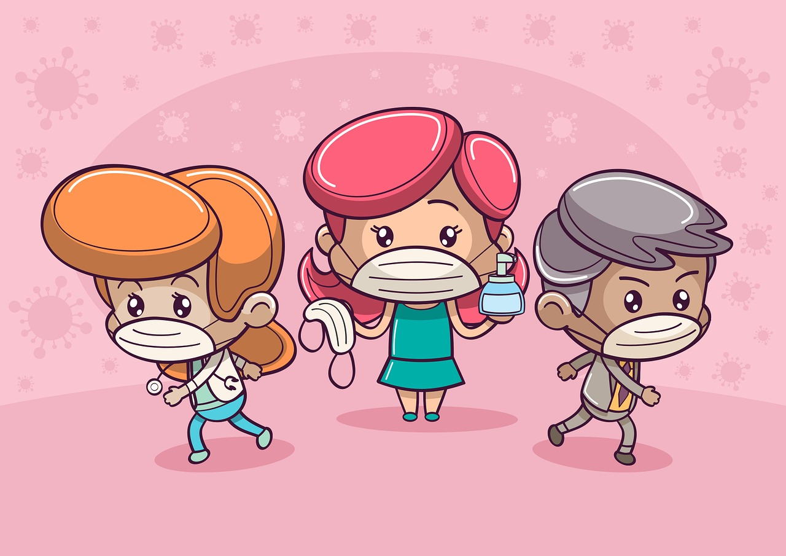

La pediatría es la rama de la medicina que se especializa en el cuidado de la salud de los niños, desde el nacimiento hasta la adolescencia.
Los pediatras son médicos que han completado la educación médica básica y luego han seguido una formación adicional en pediatría. Esta formación incluye una residencia en pediatría, durante la cual adquieren experiencia en el cuidado de niños de todas las edades, desde recién nacidos hasta adolescentes.
La pediatría abarca una amplia gama de temas relacionados con la salud infantil, incluyendo el crecimiento y desarrollo, la nutrición, las enfermedades infecciosas, las enfermedades crónicas, la salud mental, la prevención y la atención de lesiones, entre otros.
Los pediatras realizan exámenes de rutina, controles de crecimiento y desarrollo, y administran vacunas para prevenir enfermedades. También brindan orientación a los padres sobre la crianza de los niños y promueven hábitos de vida saludables desde una edad temprana.
Los pediatras diagnostican y tratan una amplia variedad de enfermedades y trastornos que afectan a los niños, desde enfermedades comunes como el resfriado y la gripe, hasta enfermedades crónicas como el asma y la diabetes. También proporcionan atención especializada para condiciones pediátricas específicas, como trastornos del desarrollo, trastornos genéticos y enfermedades raras.
Los pediatras trabajan en colaboración con otros profesionales de la salud, como enfermeras pediátricas, trabajadores sociales, terapeutas ocupacionales y fisioterapeutas, para brindar una atención integral y coordinada a los niños y sus familias.
Además de tratar enfermedades, los pediatras se centran en el bienestar global de los niños, incluyendo su salud física, mental y emocional. Promueven un entorno seguro y saludable para el crecimiento y desarrollo óptimos de los niños.